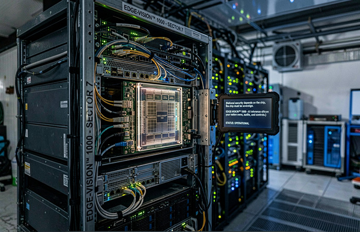

SOVEREIGN EDGE AI SILICON · SERIES A 2026
When national security depends on the chip, the chip must be sovereign. EDGE-VISION™ 1000 - AI inference silicon your nation owns, audits, and controls.

THE CHALLENGE
Every government operating critical infrastructure faces the same structural problem: the chips that power national surveillance, ports, pipelines, and border security are designed and controlled by foreign commercial entities. That creates unavoidable strategic risk.
Foreign governments can restrict or revoke access to commercial silicon at any time - mid-programme, mid-deployment, mid-crisis. No national programme can accept a supply chain with an off-switch controlled by another sovereign.
Closed firmware prevents the security audits mandated for critical national infrastructure. You cannot certify what you cannot inspect. You cannot defend what you do not understand.
Consumer and automotive chips are discontinued in 3-5 years. National infrastructure is planned and budgeted in decades. The lifecycle expectations are irreconcilable.
Cloud-dependent inference violates national data residency law. Video feeds from sovereign infrastructure must be processed on-device, on-shore - not routed through foreign cloud.
No hardware root of trust, no cryptographic key provisioning, no secure boot chain in any foreign commercial SoC designed for the sovereign price point and power envelope.
Single-supplier dependency and opaque firmware create unacceptable risk in national security and critical infrastructure deployments. When the vendor discontinues, the programme fails.
THE SOLUTION
EDGE-VISION™ 1000 is purpose-designed sovereign edge AI vision silicon. The same chip - with the same sovereign security stack, the same 15-year lifecycle commitment, and the same IP ownership structure - serves ten distinct verticals across national infrastructure.
The same EDGE-VISION™ 1000 chip operates across all ten verticals. No new tapeout. Same sovereign IP. Same security stack.
Cities · Borders · Ports · Airports · Critical facilities
Pipelines · Offshore platforms · Refineries · UAV inspection
ANPR · Traffic AI · Incident detection · Smart tolling
Container AI · Yard automation · Vessel monitoring · Terminal security
Perimeter intelligence · ISR payloads · Border monitoring towers
Surveillance UAVs · Infrastructure inspection · Patrol payloads
Factory quality · Refinery monitoring · Warehouse automation
Smart intersections · Roadside nodes · V2X communication
Security robots · Inspection robots · Logistics automation
Hospital security · Patient monitoring · Fall detection
Every line of RTL, architecture, and firmware IP is assigned to a nationally incorporated entity. No foreign licensor holds rights over your national programme. No foreign government can compel a licence restriction.
Hardware root of trust. Cryptographic key provisioning. Hardware-enforced isolation between secure and normal execution environments. Secure boot chain. Purpose-designed for national critical infrastructure certification.
National infrastructure programmes plan in decades. EDGE-VISION™ 1000 carries a 15+ year industrial-grade support commitment - a contractual programme commitment backed by the team and programme structure.
Critical infrastructure operators must recertify deployed systems annually. EDGE-VISION™ 1000 is designed for this cycle - firmware update, security audit, and recertification support built in as an annual compliance subscription.
The Veredian founding team has built silicon at the frontier - from multi-thousand TOPS AI SoCs on leading-edge nodes to safety-certified automotive chips for global Tier-1 manufacturers.